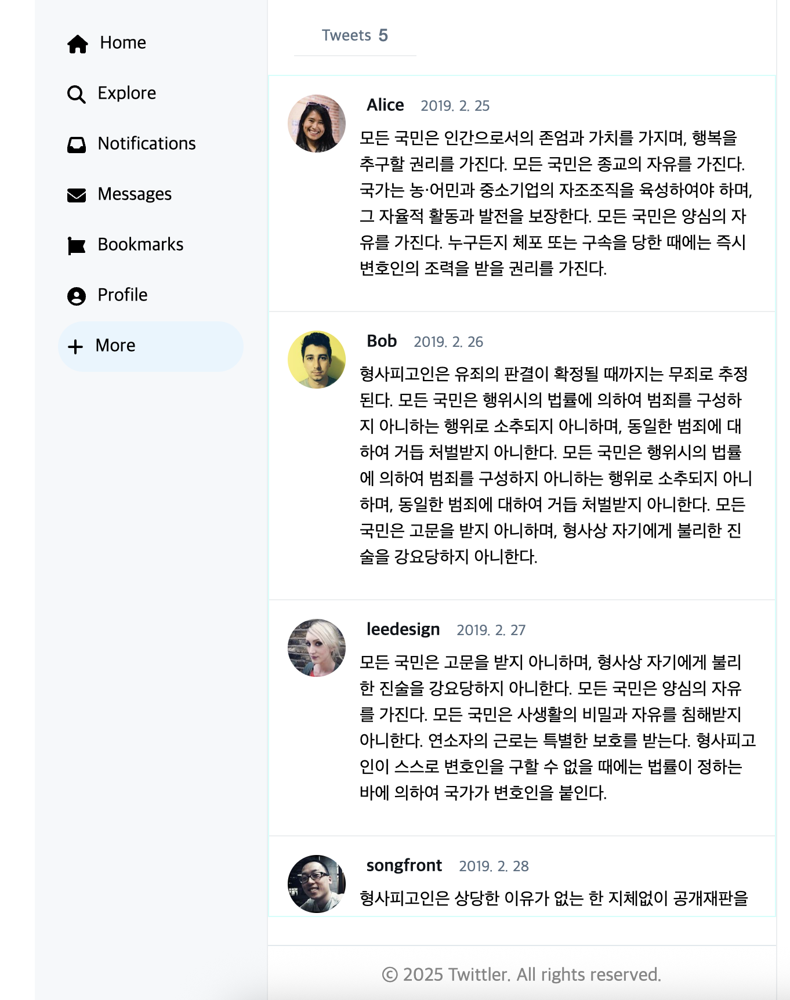

1. React란?
React는 Meta(구 페이스북)에서 개발한 JavaScript UI 라이브러리로, 사용자 인터페이스를 만들 때 특히 단일 페이지 애플리케이션(SPA) 구현에 유용하다. 데이터 변경에 따라 효율적으로 UI가 업데이트되기 때문에 프론트엔드 개발에서 많이 사용된다.
- SPA 지원: 페이지 전환 없이 콘텐츠 갱신
- 커뮤니티가 풍부: 튜토리얼과 에코시스템 다양
- 유연성: 다른 프레임워크와도 쉽게 결합 가능
2. JSX (JavaScript XML)
React에서는 JSX 문법을 사용해 HTML처럼 UI를 작성할 수 있다. 실제로는 자바스크립트 코드로 컴파일되며, DOM에 적용된다.
const element = <h1>Hello, React!</h1>;JSX 규칙
- HTML처럼 보이지만 실제로는 JavaScript
class대신className사용- 복수 엘리먼트는 반드시 하나의 태그로 감싸야 함
if대신 삼항연산자를 사용하여 조건부 렌더링
3. 컴포넌트 구성 방식
React는 UI를 컴포넌트 단위로 나누어 개발한다. 재사용 가능하고 유지보수가 용이해진다.
함수형 컴포넌트
function Welcome() {
return <h1>Hello, React!</h1>;
}
클래스형 컴포넌트
class Welcome extends React.Component {
render() {
return <h1>Hello, React!</h1>;
}
}
4. props와 state
- props: 부모 컴포넌트에서 자식 컴포넌트로 전달되는 값
- state: 컴포넌트 내부에서 관리되는 상태값
5. DOM vs React
기존에는 HTML + CSS + JS를 나눠 작성했지만, React에서는 JSX를 통해 **한 파일 안에 HTML 구조 + 로직을 같이 작성**할 수 있다. 덕분에 컴포넌트를 하나의 파일로 직관적으로 확인할 수 있어서 유지보수와 가독성이 높아진다.
다만 JSX는 HTML이 아니기 때문에 Babel을 이용한 컴파일 과정이 필요하다.
6. 실습: 트위터 UI 구성
React로 트위터 구조를 간단히 구현해보았다.
Header, Sidebar, MainFeed, Footer 등으로 나누어서 구성하니 훨씬 구조가 깔끔했다.
처음에는 JSX 문법이 생소하고 class 대신 className을 써야 하는 부분 등에서 헷갈렸지만, 오류도 금방 눈에 띄고 수정이 쉬워서 **디버깅과 유지보수 면에서는 매우 만족스러웠다.**
결과 화면 (실습 이미지)
▲ React로 만든 트위터 UI 예시
HTML과 JS가 합쳐진 구조가 익숙하지 않아서 약간 헷갈렸지만, 구조가 간단해서 가독성이 좋았고 편리했다.